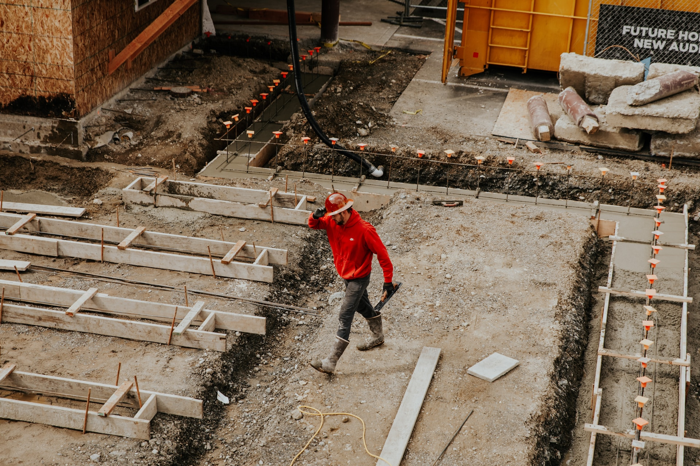

NYBYGGNAD
STOCKHOLM

Det är helt marklöst och tänker på var man ska börja bygga ett hus, för nollcykeln tar många förberedelserna för byggplatsen och lägger grunden. I praktiken är detta bara ”toppen av isberget”, för innan den omedelbara byggstarten kommer det att behövas en stor mängd förberedande arbeten, på vilket framgång för hela företaget beror mycket. Förutom att erhålla nödvändiga tillstånd är det nödvändigt att utarbeta varje byggnadssteg, vilket hjälper till att undvika framtida problem, till exempel med obekväma trappor och en myrig trädgård. I detta skede måste du lösa flera viktiga problem: välj en byggnadsplats, fastställa dess budget, välj ett husprojekt, få ett byggnadstillstånd och välj en entreprenör. Alla frågor är lika viktiga, alla måste vara noga uppmärksamma.
När de väljer och köper mark för ett nytt hus uppmärksammar de både juridiska och praktiska nyanser. Förfarandet åtföljs av genomförandet av många dokument, så det är lämpligt att locka en betrodd mellanhand – en fastighetsmäklare eller en advokat. Det är omöjligt att avgöra hur man ska bygga ett hus på rätt sätt utan en detaljerad inspektion av den plats där arbetet kommer att utföras, och i idealfallet börjar allt med att leta efter mark för byggande. Eftersom bekvämligheten i ett framtida liv direkt beror på platsens plats, vid valet av det senare styrs flera kriterier: Att välja rätt material är ett ämne för en separat grundlig diskussion. Allt material, oavsett om det är tegel, trä, sandwichpaneler, skum eller luftbetong, har en uppsättning individuella egenskaper. Dessa egenskaper kan visas både på de positiva och negativa sidorna, beroende på användningen. När man väljer ett material är de avgörande faktorerna lokala förhållanden (klimat, topografi) och ekonomiska argument. Det sistnämnda strider ofta med önskan att göra huset bekvämt, pålitligt och miljövänligt. Det måste komma ihåg att alla hem behöver eftertänksam isolering, ett tillförlitligt tak och modernt teknisk support.
En så klar önskan att spara pengar motiverar inte sig själv när man bygger ett hus, eftersom det oftast leder till ökade kostnader i framtiden. Den fasade byggandet av huset innebär en detaljerad preliminär beräkning av uppskattningen; det är bättre att göra det med föraren. När väggarna och taket är uppfört kan byggnadens tekniska stödkostnader verka orimligt höga, men det rekommenderas inte att minska dem utan goda skäl. I många avseenden är ett typiskt projekt det mest lönsamma alternativet (jämfört med egenkonstruktion och ett enskilt projekt). Det gör att du omedelbart kan börja bygga utan att stanna vid designarbeten. Innan byggarbete påbörjas är det nödvändigt att samordna dem med tillstånd. För att bygga ett hus från grunden måste du börja med att förbereda dokument, där listan har vissa skillnader i olika regioner. Listan kan klargöras av administrationen. Därefter utarbetas inspektionscertifikatet för platsen och objektets konstruktionspass. Sanitär-epidemiologiska inspektioner och brandinspektioner enas om en utvecklingsplan och i brandkåren dessutom el- och gaskretsar. Efter att ha studerat den överenskomna planen utarbetar arkitekturutskottet ett konstruktionspass.
Kompositionen och den erforderliga mängden material anges i uppskattningen. När du väljer föredras byggnads- och efterbehandlingsmaterial som har ett tillverkarintyg (kvalitetsgaranti). Detta kommer att hjälpa till att undvika framtida besvikelser i taket eller ytterytan, som snabbt börjar förlora sitt utseende efter 2-3 säsonger. Vanligtvis anskaffas de flesta materialen för framtida användning. Byggandet är ofta försenat eller tillfälligt upphört, till exempel på vintern. Om de lagras felaktigt kan materialens kvalitet minska, ibland avsevärt (detta gäller inte bara träkonstruktioner utan också för tegelstenar, byggstenar, torra blandningar). Att veta var du ska börja bygga ett hus på en tomt, kan du tänka igenom de efterföljande stadierna för att bygga ett privat hus och inte oroa dig för tidsfrister. Innan arbetet påbörjas är det nödvändigt att tillhandahålla anslutningsvägar, vatten och el till byggplatsen. I detta skede har byggnadens axel redan förts till platsen i enlighet med brand- och sanitetsstandarder. Byggandet av ett privat hus går igenom flera etapper. En plats för ingången till vattenförsörjningssystemet och utloppet till avloppssystemet planeras, diken grävs ut för dem, rören läggs och isoleras. Grunden läggs. För att göra detta, gräva en grop, lägg en kudde av krossad sten i botten, och formarbeten är installerad. Efter montering av armeringen hälls betong.
För att betong ska få styrka kommer det att ta från 20 till 30 dagar. Denna tid kan ägnas åt konstruktionen av en septiktank eller brunn. Sedan är grundmurarna uppförda. I detta skede bygger de väggar och installerar tak, sedan bygger de takbjälkar och lägger taket. Slutligen sätter de in fönster och installerar en garageport och en entrédörr. Detta inkluderar ytterväggdekoration, installation av balkong och trappor (om projektet tillhandahåller det). Därefter utförs en inre isolering av golv och väggar, väggarnas primära finish, golven är monterade, taket är mantlat. Samtidigt läggs ingenjörsnät (avlopp, vattenförsörjning och elektriska ledningar). Byggandet av ditt eget hem är en spännande period i familjelivet. Vägen från godkännandet av den arkitektoniska planen till hushållningen kommer att komma ihåg i många år. Det kommer definitivt att vara trevliga minnen, om du väljer byggföretaget korrekt, vars specialister hjälper till med rätt val av plats och projekt, plus att de tar upp en tankeväckande byggnadsplan.
Vänligen fyll i formuläret korrekt